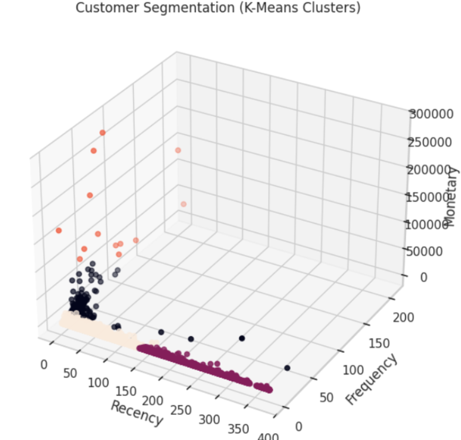
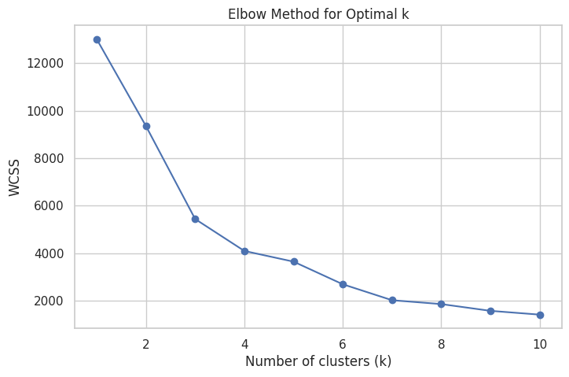
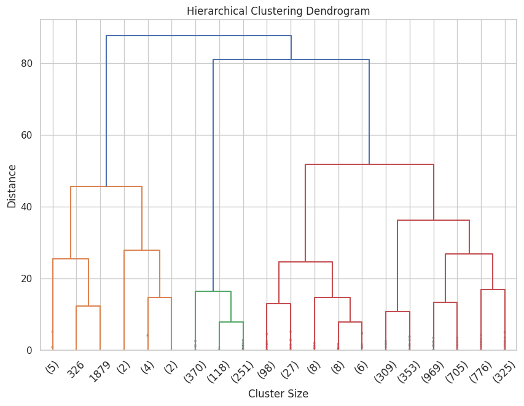
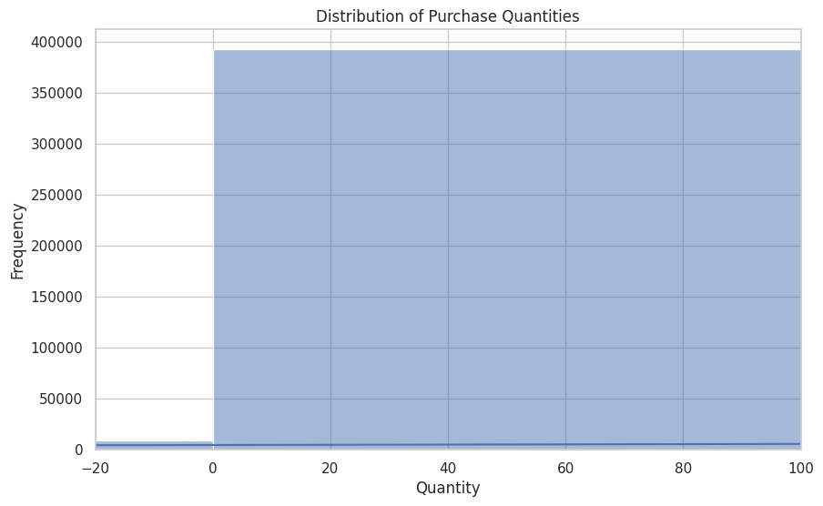
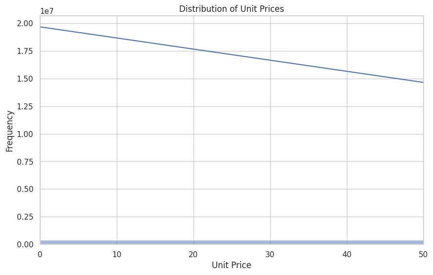
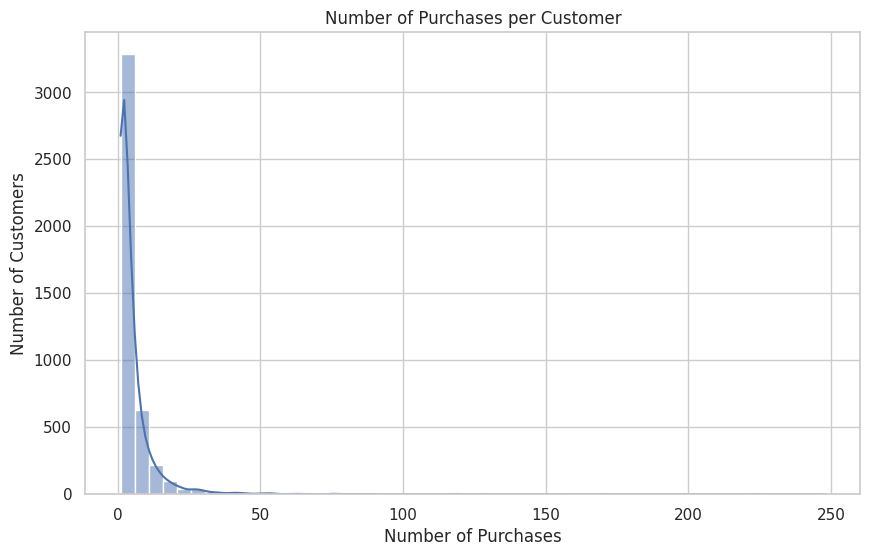
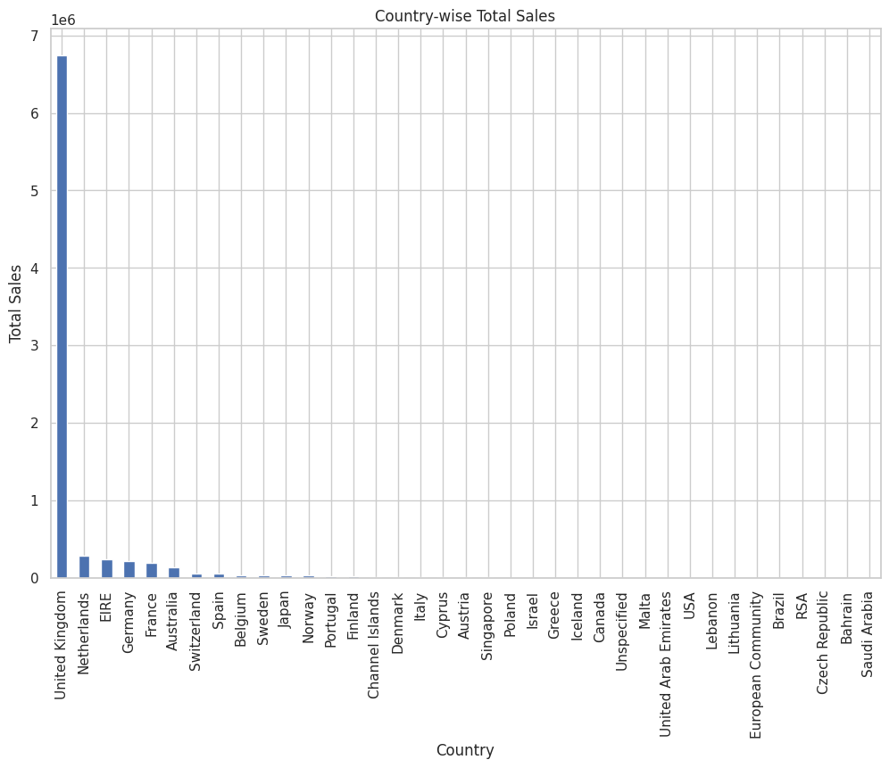
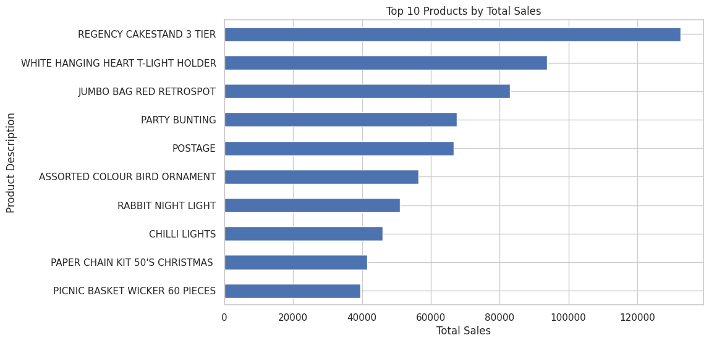
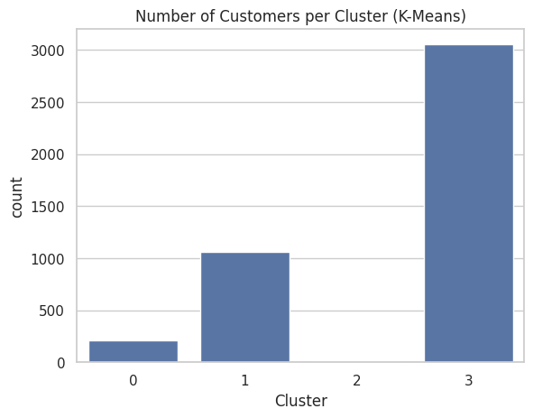

Data science project using RFM analysis and clustering algorithms to identify customer groups for targeted marketing strategies.
Customer segmentation is a machine learning technique used to divide customers into groups based on their purchasing behaviour. Businesses use this information to target marketing strategies more effectively and improve customer engagement.
The dataset contains customer information such as annual income and spending score. These features help identify patterns in customer purchasing behaviour.
K-Means clustering was applied to group customers into segments based on their similarity. Each cluster represents a group of customers with similar purchasing patterns.
The dataset was collected from Kaggle containing transactional records of an online retail store including invoice details, product information, customer ID and purchase quantity.
Missing values were removed and invalid transactions were filtered. RFM (Recency, Frequency, Monetary) features were engineered to represent customer purchasing behaviour.
Customer segmentation was performed using K-Means clustering. The optimal number of clusters was determined using the Elbow Method and hierarchical clustering analysis.
The resulting customer groups allow businesses to identify high-value customers, occasional buyers and low engagement users to design targeted marketing campaigns.
The following visualizations show exploratory data analysis and clustering results used to segment customers based on purchasing behaviour.

K-Means Customer Clusters

Elbow Method for Optimal Clusters

Hierarchical Clustering Dendrogram

Distribution of Purchase Quantities

Distribution of Unit Prices

Number of Purchases per Customer

Country-wise Total Sales

Top Selling Products

Customers per Cluster
Most customers make small numbers of purchases, while a small group of loyal customers contributes a large portion of revenue.
The United Kingdom generates the majority of total sales, showing strong regional concentration.
A small set of products dominate total sales, suggesting demand concentration on key items.
K-Means clustering identified distinct groups such as loyal customers, regular buyers, and low engagement users.
Customers Analyzed
RFM Features
Customer Segments
Clustering Algorithms
You can explore the full implementation, data analysis and machine learning model on GitHub.
View Project on GitHub